基本繪圖
reference
一般視窗作業系統的繪圖，會有一個抽象物件device在這個device上，有一個抽象物件canvas，和繪圖工具例如，水彩筆之類的抽象物件可以指定顏色，線條粗細等等。
basic
基本繪圖函數，plot(),hist()
㊙️ 怎樣快速查詢？
- ??draw
- ?plot : 參考其中的
plot.default查看圖形選項
plot
可能最常用的繪圖函數就是plot(),而這個函數比較常用的選項有： * type: 僅分佈點（預設）是否連線等基本模板。 * lty: 線條樣式line style * lwd: 線條寬度line width * col: * pch: mark
| type | description |
|---|---|
| p | points |
| l | lines |
| o | 重合的點和線段 |
| b, c | b(both) 點+線,不重合 (如果是“c” 則沒有點) |
| s, S | stair steps |
| h | histogram-like vertical lines |
| n | does not produce any points or lines |
資料點 符號
The parameter that sets the symbol is called pch (“point character”).
pch —> takes values between 0 to 24 to give 25 symbols.
In addiditon, 10 keyboard characters like "*“,”+“,”o“,”@“,”#" etc can be used.
The list of 25 symbols are given below:
pch=0 square
pch=1 circle
pch=2 triangle point up
pch=3 plus
pch=4 cross
pch=5 diamond
pch=6 triangle point down
pch=7 square cross
pch=8 star
pch=9 diamond plus
pch=10 circle plus
pch=11 triangles up and down
pch=12 square plus
pch=13 circle cross
pch=14 square and triangle down
pch=15 filled square blue
pch=16 filled circle blue
pch=17 filled triangle point up blue
pch=18 filled diamond blue
pch=19 solid circle blue
pch=20 bullet (smaller circle)
pch=21 filled circle red
pch=22 filled square red
pch=23 filled diamond red
pch=24 filled triangle point up red
pch=25 filled triangle point down redcex 資料點大小
cex 表示放大倍數
因此, cex = 1 is default size
cex = 1.5 is 150% of default size
cex = 0.5 is 50% of default size
[Note : cex.axis –> scales the axis
cex.lab —> scales the label
cex.main –> scales main title
cex.sub —> scales the subtitle ]
線條型態
lty = 0 or lty = "blank"
lty = 1 or lty = "solid"
lty = 2 or lty = "dashed"
lty = 3 or lty = "dotted"
lty = 4 or lty = "dotdash"
lty = 5 or lty = "longdash"
lty = 6 or lty = "twodash"顏色 col
col = “blue
col =”red"
colors() 可用來查詢顏色
returns names of 657 colours that can bes used for this parameter.
col = “#A9F3BB” ——> colour corresponding to Red=A9, Green=F3, Blue=BB in hexadecimal representation.

繪製向量 中的資料
x <- c(1,3,4,7,8,9)
y <- c(0,3,6,9,7,8)
plot(x,y,main='plot(x,y)')繪製data.frame 中的資料
plot(mtcars$wt, mtcars$mpg)
abline(lm(mtcars$mpg~mtcars$wt))
title("Regression of MPG on Weight")
attach(mtcars)
plot(wt, mpg)
abline(lm(mpg~wt))
title("Regression of MPG on Weight")plot()函數，新建視窗然後畫出 weight vs. miles per gallon.
abline() 不會開啟新視窗做圖，abline()的語法如下:
abline(a = NULL, b = NULL, h = NULL, v = NULL, reg = NULL,coef = NULL, untf = FALSE, …)
代表的意思是畫出一條直線a+bx ，其中a代表截距常數，b則是斜率常數。例如
Y=2X+1，則對應的函數為 abline(a=1,b=2) 。
plot(sin, -pi, 2*pi) 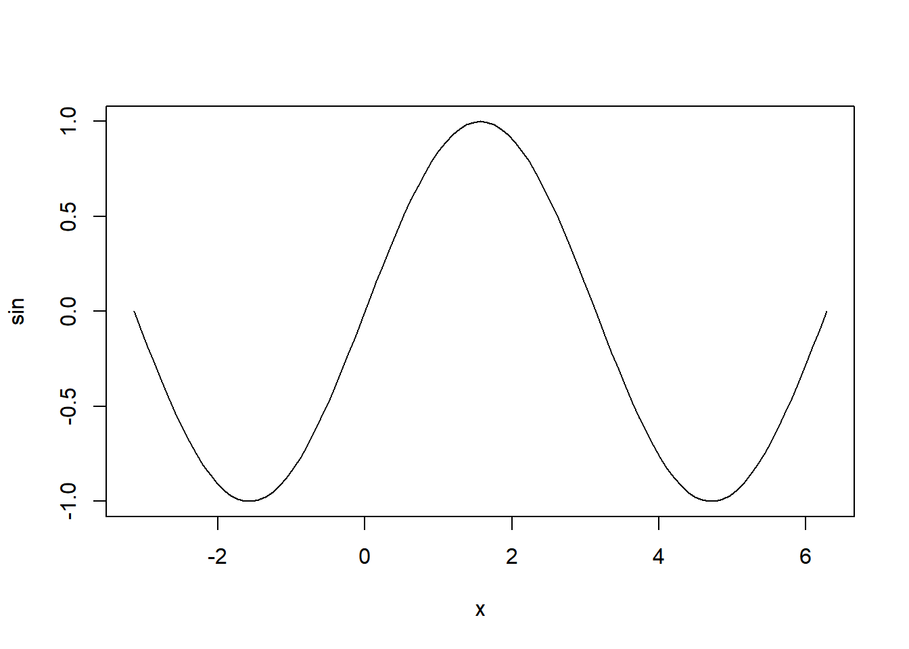
更多
require(stats) # for lowess, rpois, rnorm
summary(cars) speed dist
Min. : 4.0 Min. : 2
1st Qu.:12.0 1st Qu.: 26
Median :15.0 Median : 36
Mean :15.4 Mean : 43
3rd Qu.:19.0 3rd Qu.: 56
Max. :25.0 Max. :120 plot(cars)
lines(lowess(cars))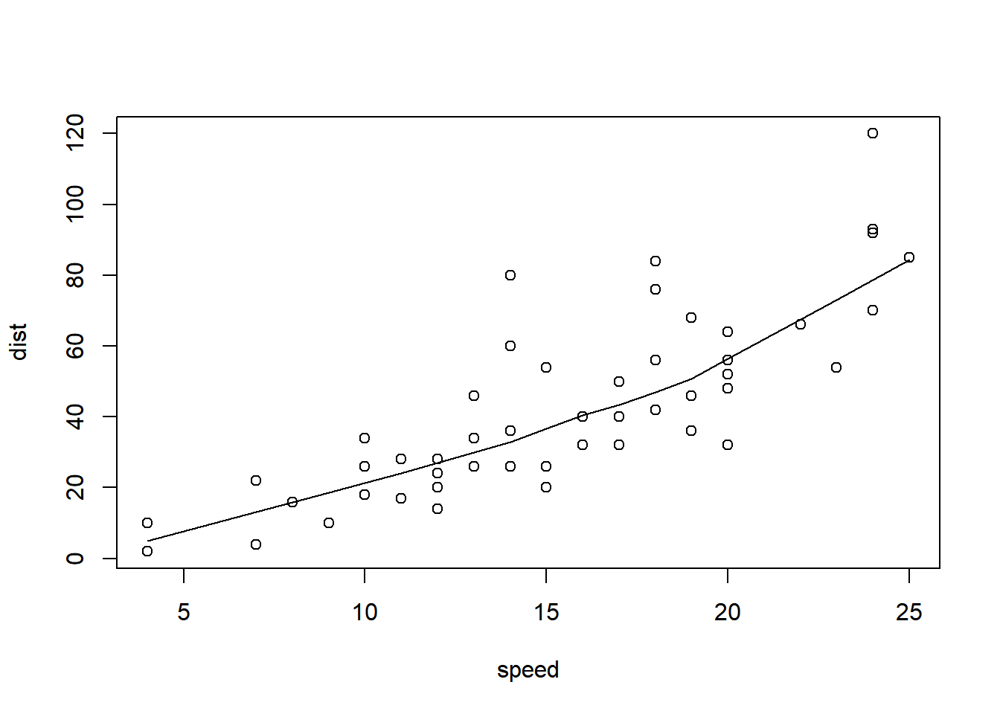
Histograms
函數hist(x)：其中x是一個數字向量，
- 選項
freq=FALSE用來畫出 probability densities 而不是次數 frequencies.
- 選項：
breaks= ##則是控制分成幾份。
Simple Histogram
hist(mtcars$mpg)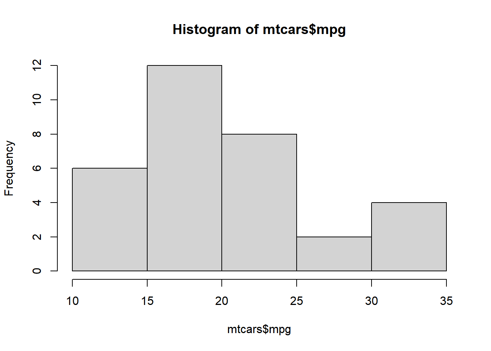
分成12份，顏色紅色。
hist(mtcars$mpg, breaks=12, col="red")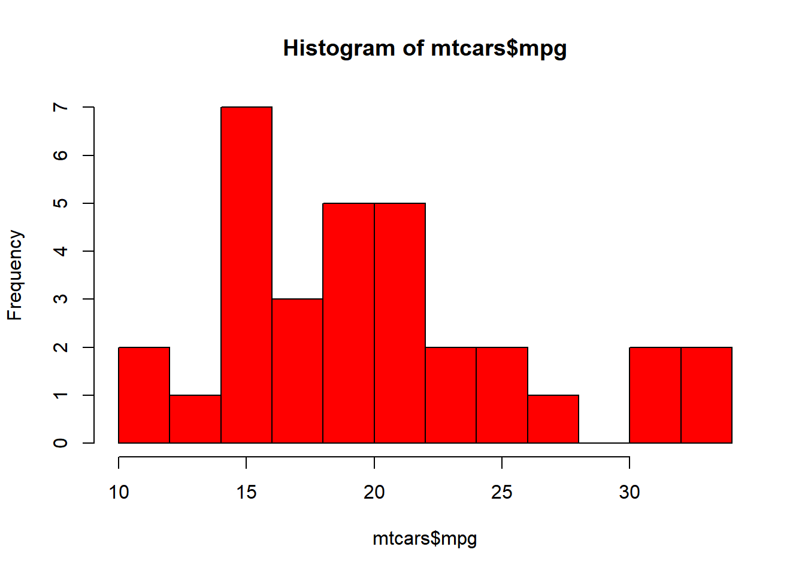
自行給定分割點
hist(mtcars$mpg, breaks=c(4,5,12,50), col="red")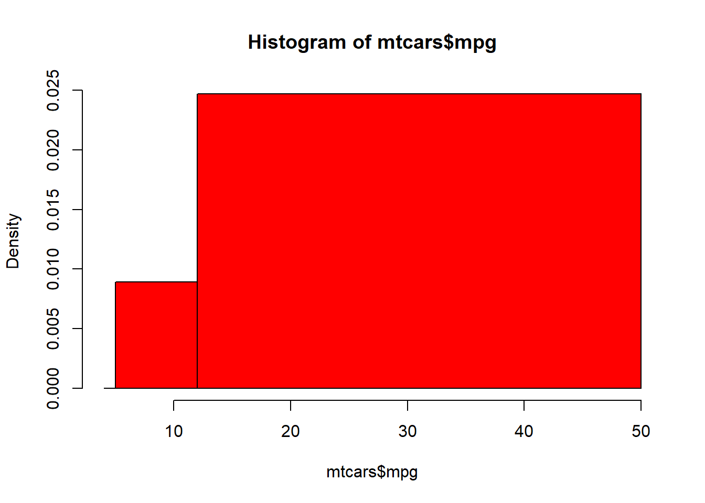
Add a Normal Curve
x <- mtcars$mpg
h<-hist(x, breaks=10, col="red", xlab="Miles Per Gallon",
main="Histogram with Normal Curve")
xfit<-seq(min(x),max(x),length=40)
yfit<-dnorm(xfit,mean=mean(x),sd=sd(x))
yfit <- yfit*diff(h$mids[1:2])*length(x)
lines(xfit, yfit, col="blue", lwd=2)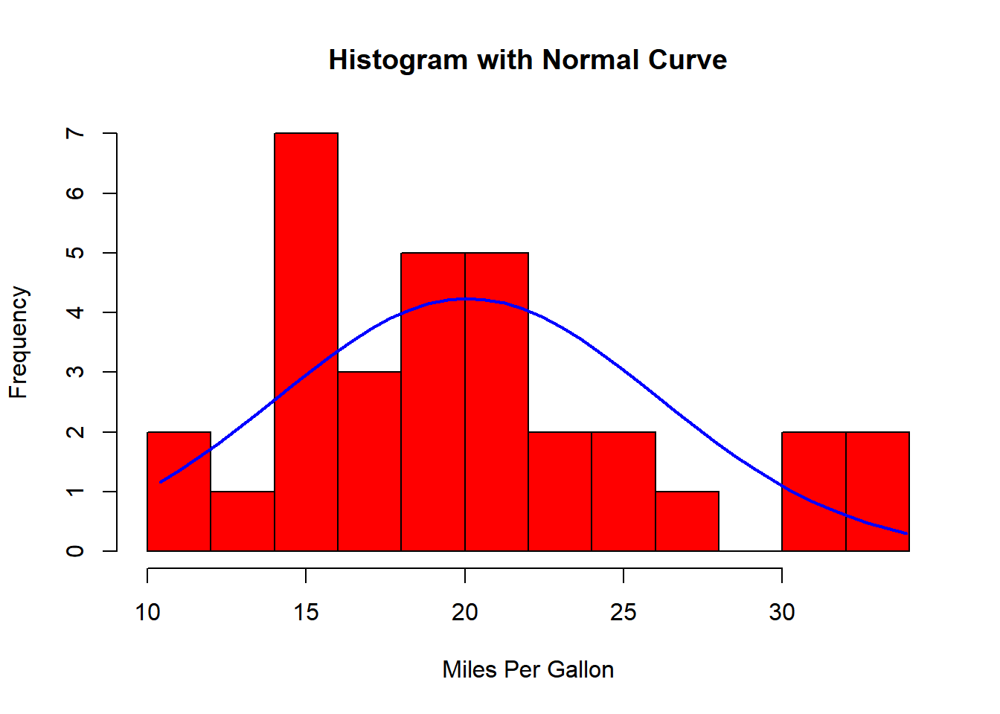
hint:
h: 次數分配圖,又
\(pdf=\frac{\frac{n}{N}}{bin \quad width}\)
所以
\(n=pdf\times N \times (bin \quad width)\)
Histograms can be a poor method for determining the shape of a distribution because it is so strongly affected by the number of bins used.
h$breaks
[1] 10 12 14 16 18 20 22 24 26 28 30 32 34
$counts
[1] 2 1 7 3 5 5 2 2 1 0 2 2
$density
[1] 0.0312 0.0156 0.1094 0.0469 0.0781 0.0781 0.0312 0.0312 0.0156 0.0000
[11] 0.0312 0.0312
$mids
[1] 11 13 15 17 19 21 23 25 27 29 31 33
$xname
[1] "x"
$equidist
[1] TRUE
attr(,"class")
[1] "histogram"Kernel Density Plot
核密度畫圖(Kernal density plots) 用來觀察一個變量，比較有有效率，指令如：plot(density(x)) 其中x 是一個數字向量。
d <- density(mtcars$mpg) # returns the density data
plot(d) # plots the results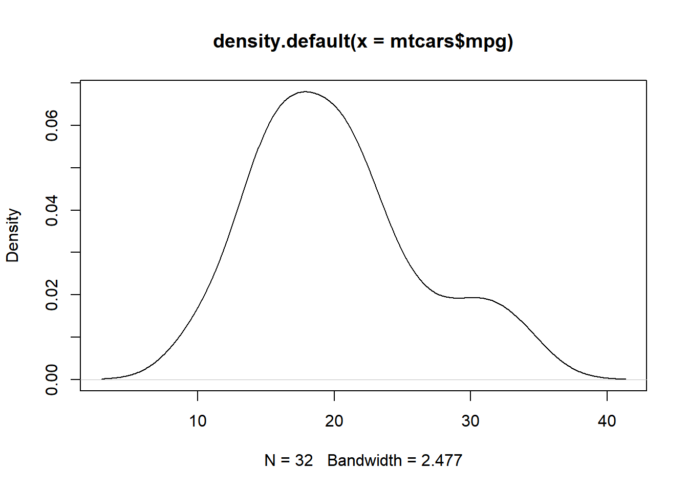
Filled Density Plot
d <- density(mtcars$mpg)
plot(d, main="Kernel Density of Miles Per Gallon")
polygon(d, col="red", border="blue")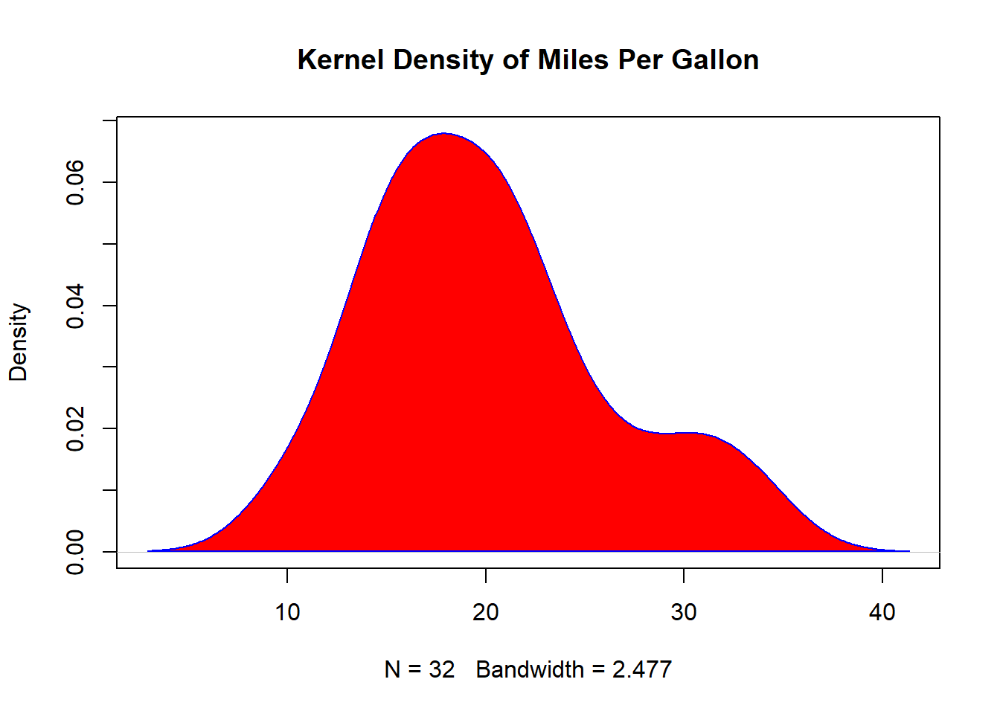
Saving Graphs
可以利用menu存檔，例如File -> Save As. 也可以利用函數：
| Function | Output to |
|---|---|
| pdf(“mygraph.pdf”) | pdf file |
| win.metafile(“mygraph.wmf”) | windows metafile |
| png(“mygraph.png”) | png file |
| jpeg(“mygraph.jpg”) | jpeg file |
| bmp(“mygraph.bmp”) | bmp file |
| postscript(“mygraph.ps”) | postscript file |
多個圖和疊圖
傻瓜指令例如 (plot, hist, boxplot, etc.)基本上會開啟新視窗，然後畫圖。這裡討論幾種自行控制的方法：
多視窗(multiple windows)、覆圖(combining figure) 和疊圖(overlay)討論。
多視窗
開多視窗的方法根據OS而不同，如下：
| Function | Platform |
|---|---|
| windows() | Windows |
| X11() | Unix |
| quartz() | Mac |
要關閉視窗，可以用函數dev.off()
如果要知道目前的視窗是那一個，可以參考 dev.cur()。
Note:
如果目前有多個圖窗，則一直呼叫這個函數dev.off()，會依次關閉視窗，直到函數傳回NULL。
驗證上面的說法可以利用
hist(mtcars$mpg)
dev.cur()png
2 hist(mtcars$mpg)
dev.cur()png
2 上面的範例，可以看到圖裝置的編號都是2，也就是多個圖在一個device上。。
hist(mtcars$mpg)
dev.cur()png
2 hist(mtcars$mpg)
dev.cur()png
2 dev.off()null device
1 討論下面的輸出結果，：
hint: 無法在rmarkdown 執行？確認，在rscript中執行正常。
if(.Platform$OS.type=="windows") windows() else X11()
hist(mtcars$mpg)
dev.cur()
if(.Platform$OS.type=="windows") windows() else X11()
hist(mtcars$mpg)
dev.cur()
測試,練習
plot.new() # 清圖形,直接在目前畫布塗上底色
dev.new() #新視窗
plot(1:1)
dev.new()
plot(2,2)
dev.set(dev.prev()) # go back to first
title(main="test dev 1")
dev.set(dev.next()) # go to second
title(main="test dev 2")合併 Plots
par()
about par()
同時顯示多個plot的結果，可以利用函數par() or layout( )。
函數par( )的選項有：
mfrow=c(nrows, ncols) 填plot的方向為橫行。
mfcol=c(nrows, ncols) 填入的方向為直行。
在console執行(課堂執行)
x<-par() 會把目前的參數拿出存到變數x。 如果par() 放了參數,會在設定完新參數以後，傳回舊紀錄(一個原因是,便於以後再還原)。在這個過程中，有些參數是無法修改的，因此儲存到變數x。
也就是說no.readonly是說在x中不要目前設定中的唯讀參數
✔️範例:
線條形式type的幾種基本類型
x <- c(1,3,4,7,8,9)
y <- c(0,3,6,9,7,8)
par(mfrow=c(2,3))
plot(x,y,main='plot(x,y)')
plot(x,y,type="l",main="plot(x,y,type='l')")
plot(x,y,type="b",main="plot(x,y,type='b')")
plot(x,y,type="o",main="plot(x,y,type='o')")
plot(x,y,type="s",main="plot(x,y,type='s')")
plot(x,y,type="h",main="plot(x,y,type='h')")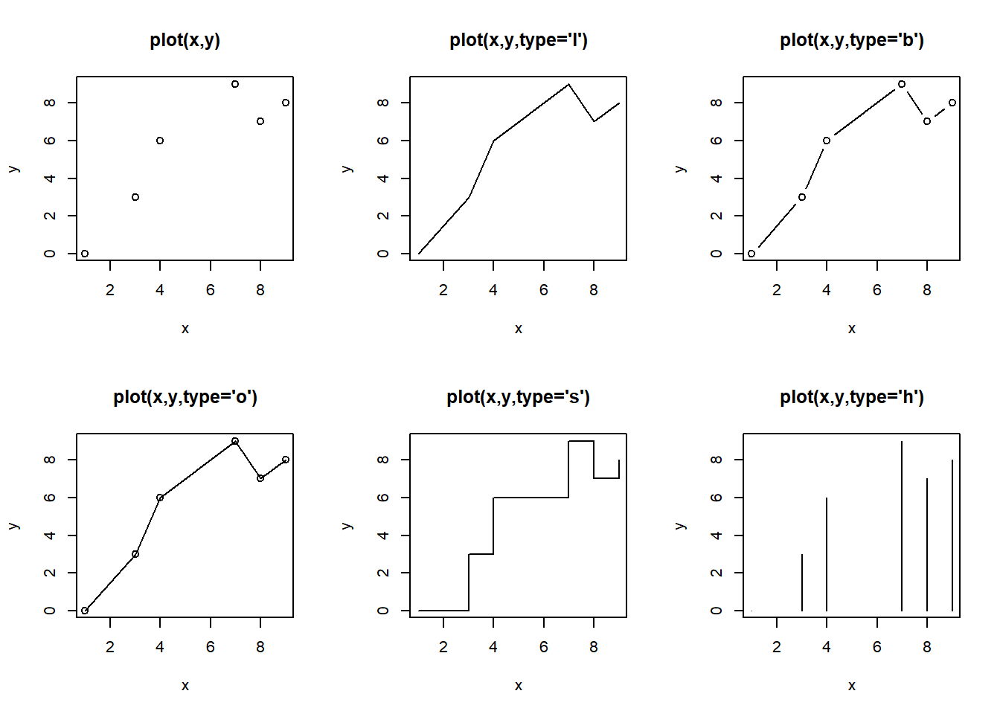
範例
attach(mtcars)attach(mtcars)
par(mfrow=c(2,2))
plot(wt,mpg, main="Scatterplot of wt vs. mpg")
plot(wt,disp, main="Scatterplot of wt vs disp")
hist(wt, main="Histogram of wt")
boxplot(wt, main="Boxplot of wt")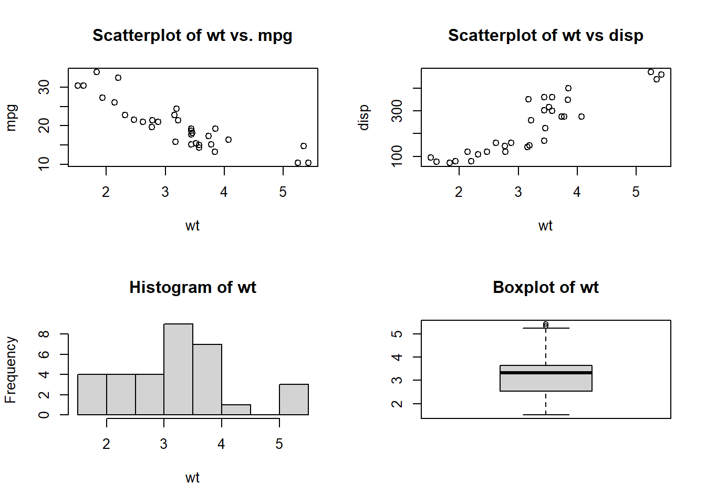
# attach(mtcars)
par(mfrow=c(1,3))
hist(wt)
hist(mpg)
hist(disp)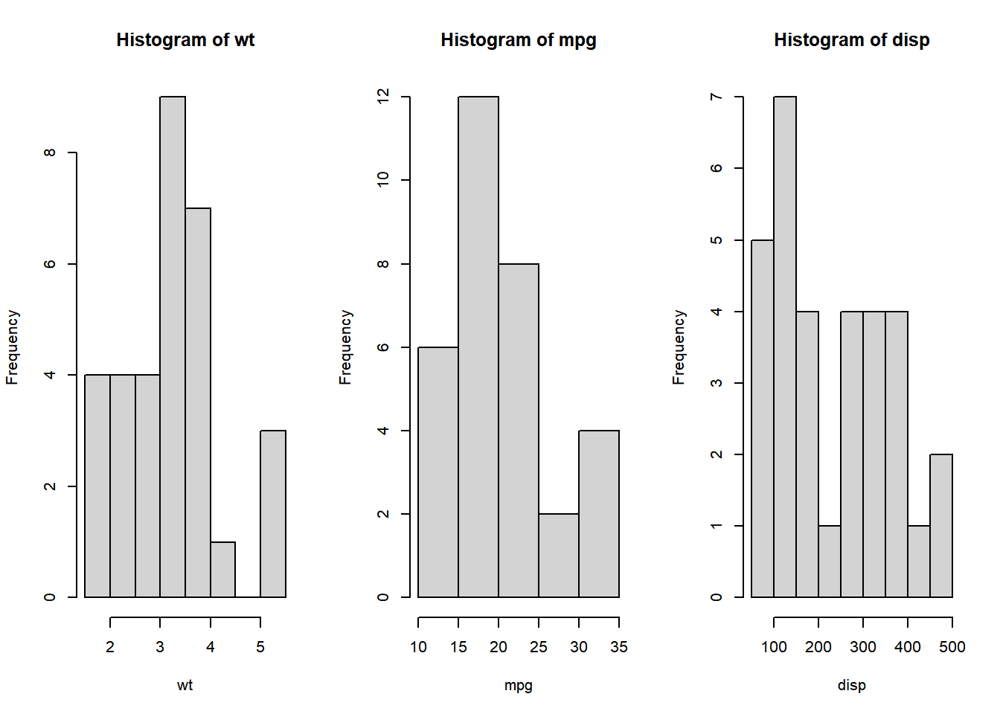
#dev.off()更多的圖形控制: 在散佈圖中加入boxplot
par(mar=rep(2,4))
# 整個圖的座標，想成左下角(0,0)右上角(1,1)
par(fig=c(0,0.8,0,0.8))#左下(0,0)右上(0.8,0.8)
#左下(x1,y1)右上(x2,y2) => c(x1,x2,y1,y2)
plot(mtcars$wt, mtcars$mpg, xlab="Car Weight",
ylab="Miles Per Gallon")
par(fig=c(0,0.8,0.55,1), new=TRUE)
boxplot(mtcars$wt, horizontal=TRUE, axes=FALSE)
par(fig=c(0.65,1,0,0.8),new=TRUE)
boxplot(mtcars$mpg, axes=FALSE)
mtext("Enhanced Scatterplot", side=3, outer=TRUE, line=-3)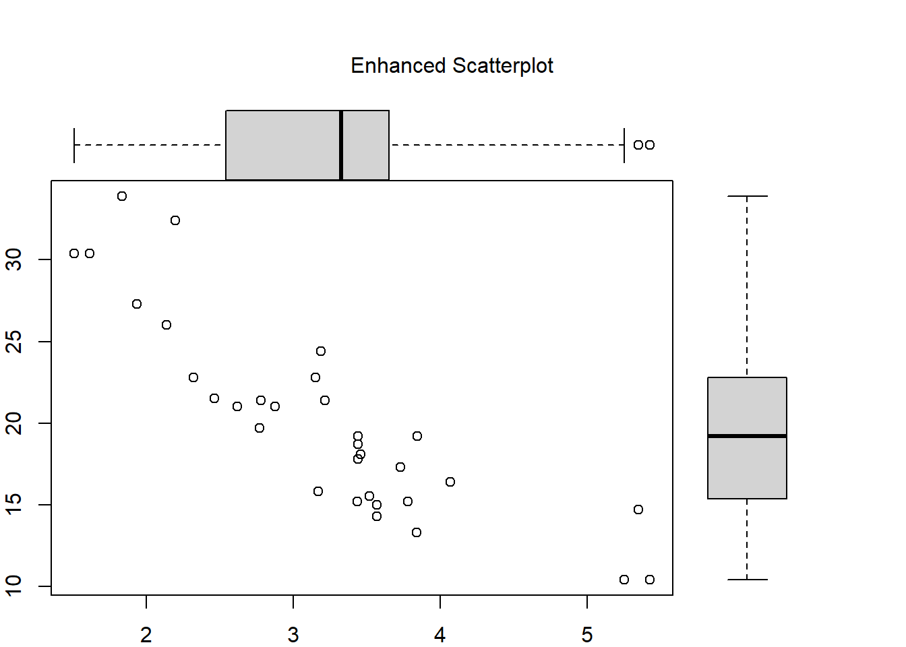
練習
練習1
讓下面兩個圖不重疊
r boxplot(mtcars$wt, axes=FALSE) par(new=TRUE) boxplot(mtcars$mpg, axes=FALSE)
練習2
讓disp,mpg 的histogram 疊在一起:
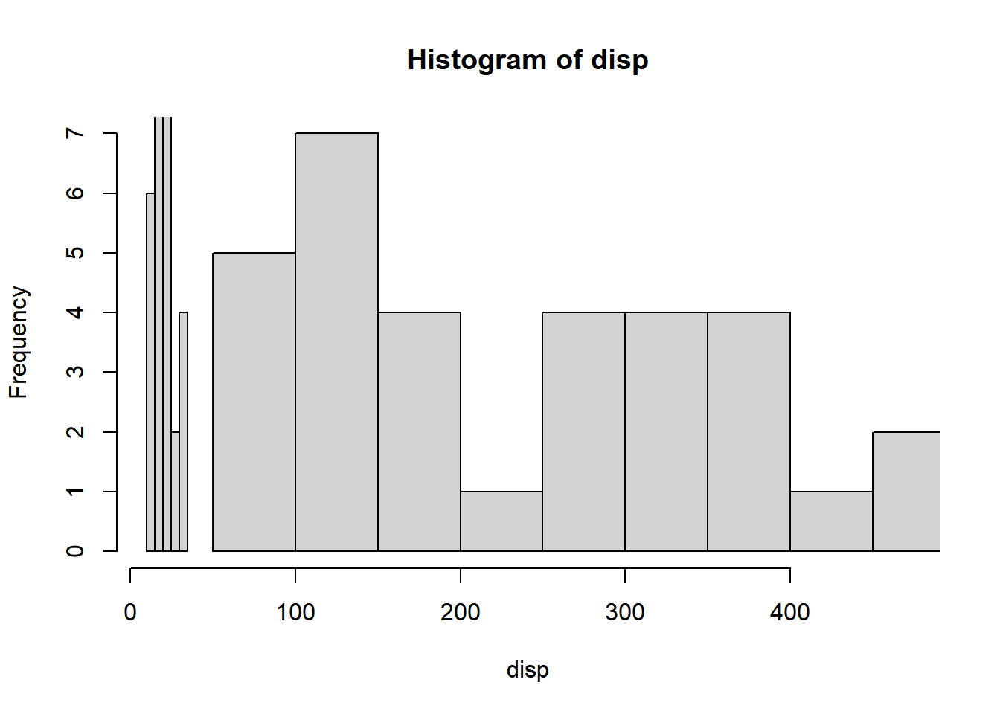
練習3
測試這篇文章
layout()
函數 layout( ) 的使用方法為 layout(mat) 其中 mat 的元素用來指定圖形號碼。例如分成4個格子,順序為左右上下(byrow=TRUE)
如layout(matrix(c(1,1,2,3), 2, 2, byrow = TRUE)) 對應如下表
| 1 | 1 |
| 2 | 3 |
# One figure in row 1 and two figures in row 2
#attach(mtcars)
layout(matrix(c(1,1,2,3), 2, 2, byrow = TRUE))
hist(wt)
hist(mpg)
hist(disp)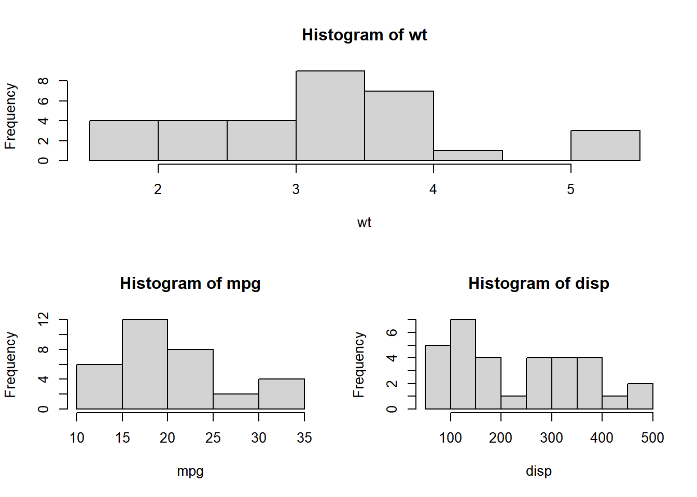
#dev.off()在layout()函數中，也可以更改圖形大小，其參數 為：
widths= 數字向量，用來代表column 寬度
heights= 數字向量，用來代表row 高度
note:Relative widths are specified with numeric values. Absolute widths (in centimetres) are specified with the lcm() function.
疊圖
有些繪圖指令的選項，可以利用add=T。
💥 plot指令不支援add=T
curve( dnorm(x,0,1), -5 , 5, lwd=1, lty=1)
curve( dnorm(x,0,2),add=TRUE, lwd=2, lty=2)
curve( dnorm(x,0,3) , add=TRUE, lwd=3, lty=3)
# Add the legend
legend( "topright",c("sigma=1","sigma=2","sigma=3") , lwd=1:3, lty=1:3)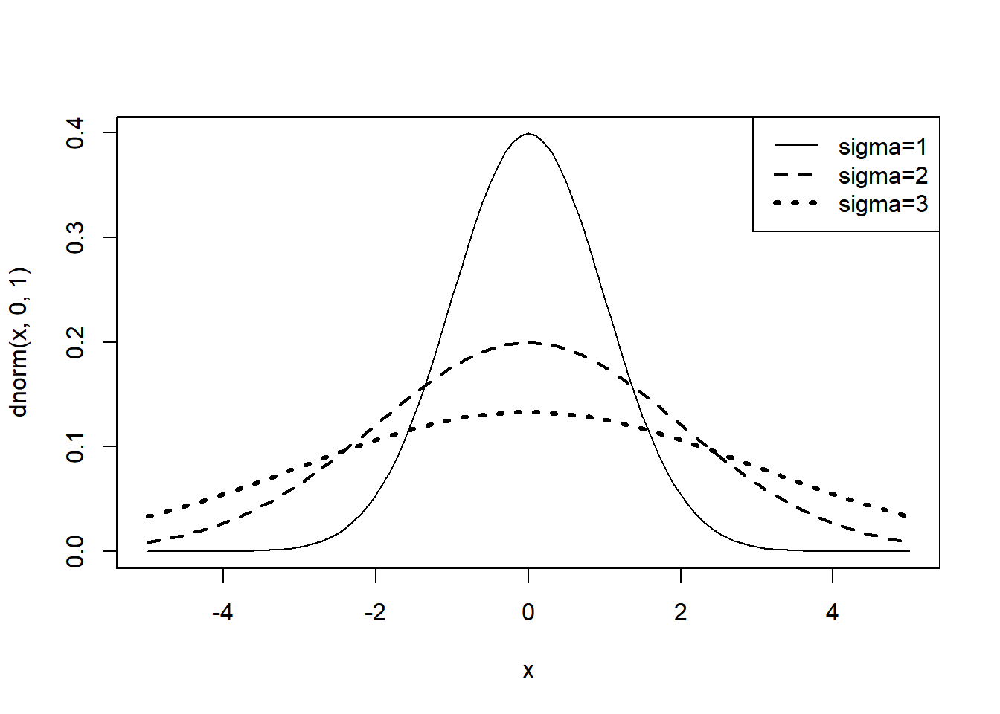
分組畫圖
Comparing Groups VIA Kernal Density
The sm.density.compare( ) function in the sm package allows you to superimpose the kernal density plots of two or more groups. The format is sm.density.compare(x, factor) where x is a numeric vector and factor is the grouping variable.
Compare MPG distributions for cars with 4,6, or 8 cylinders
library(sm)
attach(mtcars)
#create value labels
cyl.f <- factor(cyl, levels= c(4,6,8),
labels = c("4 cylinder", "6 cylinder", "8 cylinder"))
#plot densities
sm.density.compare(mpg, cyl, xlab="Miles Per Gallon")
title(main="MPG Distribution by Car Cylinders")
#add legend via mouse click
colfill<-c(2:(2+length(levels(cyl.f))))
legend(locator(1), levels(cyl.f), fill=colfill)